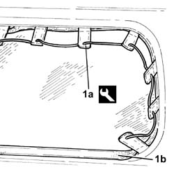
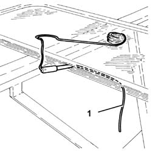
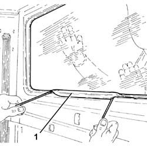

7027H12 LOAD COMPARTMENT PARTITION
- Path
- Procedures > 70 FITTINGS > 7027 LOAD COMPARTMENTS > 7027H LOAD COMPARTMENT PARTITIONS > 7027H12 LOAD COMPARTMENT PARTITION
- Kind
- repair procedure (removal / refitting; the operation number is the code)
- Applies to
- all engines; all production periods
- Interactive page
- https://sloeber94.github.io/elrnDB-fDct/en/#/244001485
Applies to: all engines; all production periods
 Removing
Removing
 Refitting
Refitting- Place the covers on the seats to avoid getting them dirty whilst removing the window.
- Remove the centre seat head restraint.
1. Using the special tool (1a), with the help of a second mechanic, remove the seal (1b) from the housing in the rear partition, then remove the partition window.
 | Description | Code | Function |
|---|---|---|---|
. | Tool for removing partition window seal | 1.878.085.000 | Dismantling glass partition |

Applies to: all engines; all production periods
Refitting
Removing- Check that the seal is not damaged.
- If it is not okay, replace the seal.
1. Position a cable along the entire perimeter of the seal, ensuring that the two ends of the cable cross over at the top of the window leaving the ends towards the inside.

Applies to: all engines; all production periods
1. Remove the cable gradually and fit the seal in the glass housing seat.

Applies to: all engines; all production periods
- Refit the centre seat head restraint.
- Remove the protective covers from the seats.